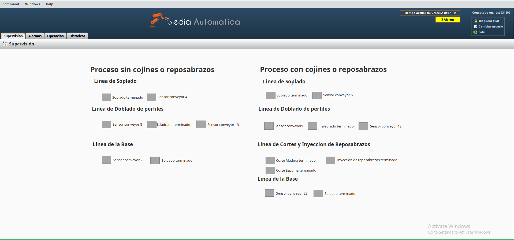
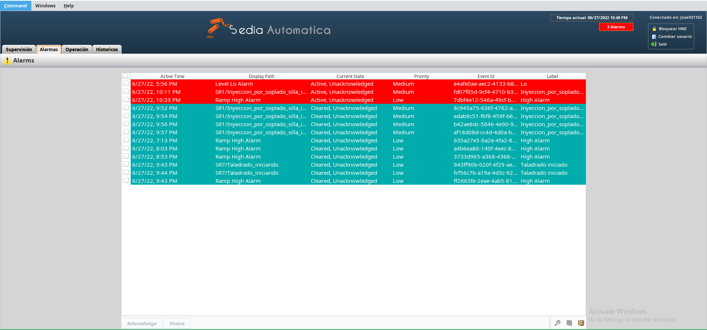
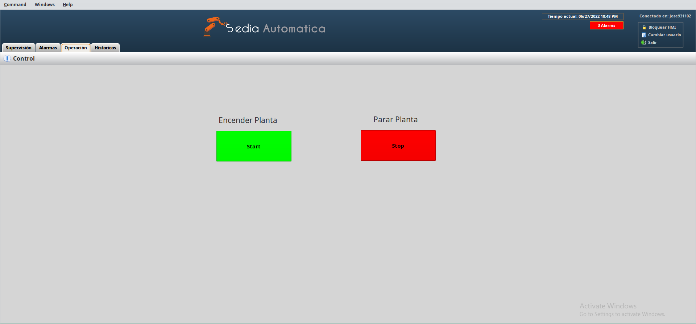
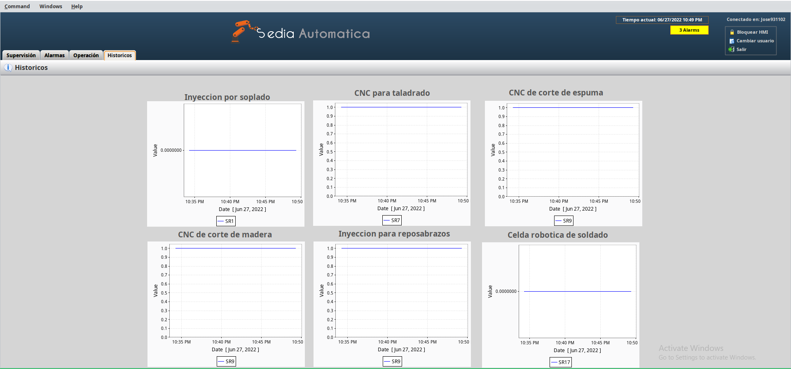
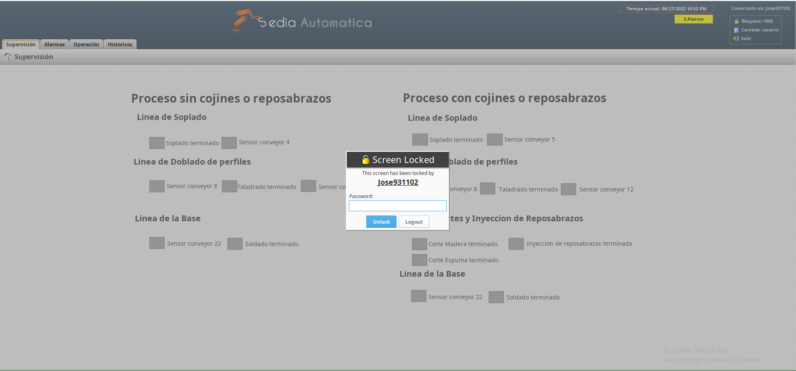

Nuestro sistema SCADA (Supervisory Control And Data Acquisition) se desarrolló en Ignition, es un software que nos ofrece la capacidad de comunicar nuestras señales via OPC UA/DA
Esta es la pantalla principal del sistema SCADA, observamos que tenemos información necesaria para el operario, la hora, desde donde inició sesión, y la supervisión de las distintas estaciones de la planta.
Aquí podemos observar el menú de alarmas de la planta.
Desde aquí podemos controlar la planta, es decir, inicializarla o pausar su operación.
El menú de historicos podemos observar el correcto funcionamiento de las estaciones automatizadas, guardandose en la base de datos del proyecto.
Para Sedia Automatica la seguridad es importante, es por esto que el sistema SCADA tiene implementado un sistema de bloqueo, donde el operario puede decidir si bloquear o no la pantalla, o si ha estado en reposo por unos minutos, esta pantalla se bloqueará automaticamente, como se muestra en la siguiente imagen.
